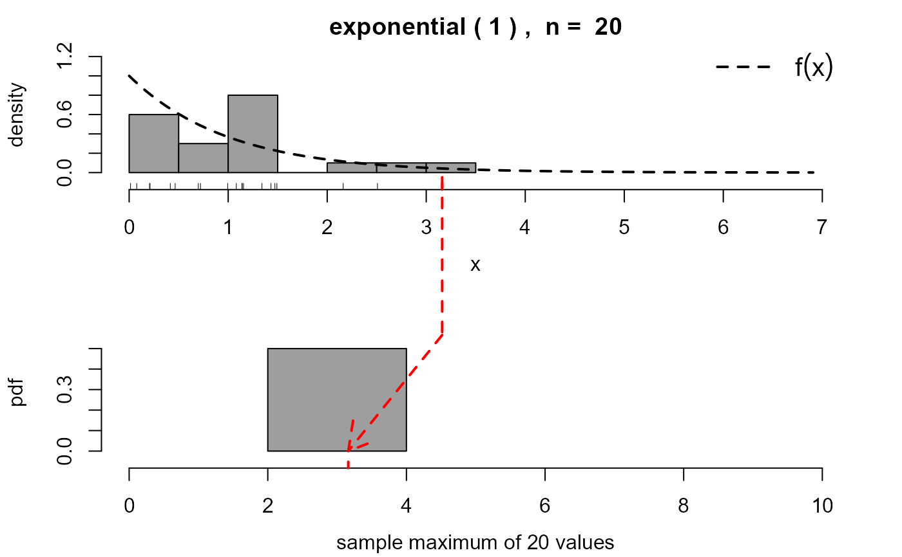
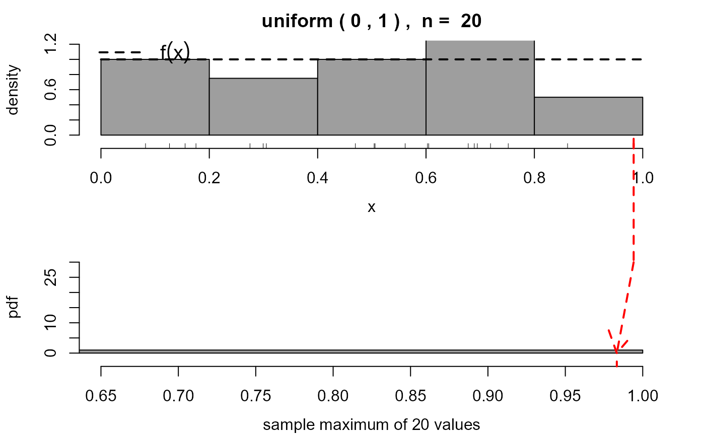
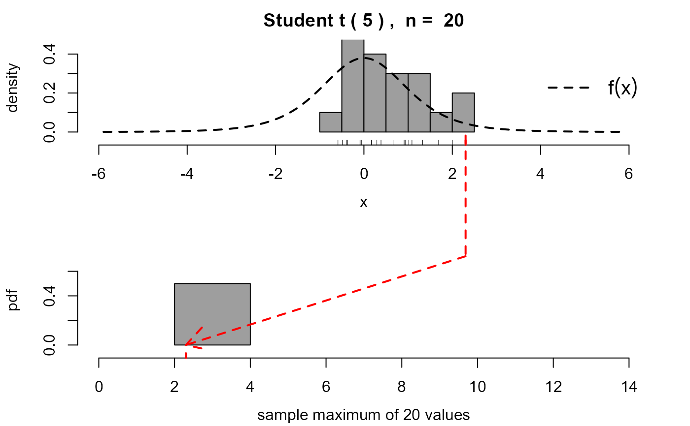

A movie to illustrate the extremal types theorem, that is, convergence of the distribution of the maximum of a random sample of size \(n\) from certain distributions to a member of the Generalized Extreme Value (GEV) family, as \(n\) tends to infinity. Samples of size \(n\) are simulated repeatedly from the chosen distribution. The distributions (simulated empirical and true) of the sample maxima are compared to the relevant GEV limit.
ett(
n = 20,
distn,
params = list(),
panel_plot = TRUE,
hscale = NA,
vscale = hscale,
n_add = 1,
delta_n = 1,
arrow = TRUE,
leg_cex = 1.25,
...
)An integer scalar. The size of the samples drawn from the
distribution chosen using distn. n must be no smaller
than 2.
A character scalar specifying the distribution from which
observations are sampled. Distributions "beta",
"cauchy", "chisq", "chi-squared",
"exponential", "f", "gamma", "gp",
"lognormal", "log-normal", "ngev", "normal",
"t", "uniform" and "weibull" are recognised, case
being ignored.
If distn is not supplied then distn = "exponential"
is used.
The "gp" case uses the gp
distributional functions in the
revdbayes package.
The "ngev" case is a negated GEV(1 / \(\xi\), 1, \(\xi\))
distribution, for \(\xi\) > 0, and uses the gev
distributional functions in the
revdbayes package.
If \(\xi\) = 1 then this coincides with Example 1.7.5 in Leadbetter,
Lindgren and Rootzen (1983).
The other cases use the distributional functions in the
stats-package.
If distn = "gamma" then the (shape, rate)
parameterisation is used. If scale is supplied via params
then rate is inferred from this.
If distn = "beta" then ncp is forced to be zero.
A named list of additional arguments to be passed to the
density function associated with distribution distn.
The (shape, rate) parameterisation is used for the gamma
distribution (see GammaDist) even if the value of
the scale parameter is set using params.
If a parameter value is not supplied then the default values in the
relevant distributional function set using distn are used,
except for
"beta" (shape1 = 2, shape2 = 2),
"chisq" (df = 4),
"f" (df1 = 4, df2 = 8),
"ngev" (shape = 0.2).
"gamma" (shape = 2,
"gp" (shape = 0.1),
"t" (df = 4) and
"weibull" (shape = 2).
A logical parameter that determines whether the plot
is placed inside the panel (TRUE) or in the standard graphics
window (FALSE). If the plot is to be placed inside the panel
then the tkrplot library is required.
Numeric scalars. Scaling parameters for the size
of the plot when panel_plot = TRUE. The default values are 1.4 on
Unix platforms and 2 on Windows platforms.
An integer scalar. The number of simulated datasets to add to each new frame of the movie.
A numeric scalar. The amount by which n is increased (or decreased) after one click of the + (or -) button in the parameter window.
A logical scalar. Should an arrow be included to show the simulated sample maximum from the top plot being placed into the bottom plot?
The argument cex to legend.
Allows the size of the legend to be controlled manually.
Additional arguments to the rpanel functions
rp.button and
rp.doublebutton, not including panel,
variable, title, step, action, initval,
range.
Nothing is returned, only the animation is produced.
Loosely speaking, a consequence of the Extremal Types Theorem is that, in many situations, the maximum of a large number \(n\) of independent random variables has approximately a GEV(\(\mu, \sigma, \xi)\)) distribution, where \(\mu\) is a location parameter, \(\sigma\) is a scale parameter and \(\xi\) is a shape parameter. See Coles (2001) for an introductory account and Leadbetter et al (1983) for greater detail and more examples. The Extremal Types Theorem is an asymptotic result that considers the possible limiting distribution of linearly normalised maxima as \(n\) tends to infinity. This movie considers examples where this limiting result holds and illustrates graphically the closeness of the limiting approximation provided by the relevant GEV limit to the true finite-\(n\) distribution.
Samples of size n are repeatedly simulated from the distribution
chosen using distn. These samples are summarized using a histogram
that appears at the top of the movie screen. For each sample the maximum
of these n values is calculated, stored and added to another plot,
situated below the first plot.
A rug is added to a histogram provided that it
contains no more than 1000 points.
This plot is either a histogram or an empirical c.d.f., chosen using a
radio button.
The probability density function (p.d.f.) of the original
variables is superimposed on the top histogram.
There is a checkbox to add to the bottom plot the exact p.d.f./c.d.f. of
the sample maxima and an approximate (large n) GEV p.d.f./c.d.f.
implied by the ETT.
The GEV shape parameter \(\xi\) that applies in the limiting
case is used. The GEV location \(\mu\) and scale
\(\sigma\) are set based on constants used to normalise the maxima
to achieve the GEV limit.
Specifically, \(\mu\) is set at the 100(1-1/\(n\))% quantile of the
distribution distn and \(\sigma\) at
(1 / \(n\)) / \(f(\mu)\), where \(f\) is the
density function of the distribution distn.
Once it starts, four aspects of this movie are controlled by the user.
There are buttons to increase (+) or decrease (-) the sample size, that is, the number of values over which a maximum is calculated.
Each time the button labelled "simulate another n_add
samples of size n" is clicked n_add new samples are simulated
and their sample maxima are added to the bottom histogram.
There is a button to switch the bottom plot from displaying a histogram of the simulated maxima, the exact p.d.f. and the limiting GEV p.d.f. to the empirical c.d.f. of the simulated data, the exact c.d.f. and the limiting GEV c.d.f.
There is a box that can be used to display only the bottom plot. This option is selected automatically if the sample size \(n\) exceeds 100000.
There is a box that can be used to display only the bottom plot. This option is selected automatically if the sample size \(n\) exceeds 100000.
For further detail about the examples specified by distn
see Chapter 1 of Leadbetter et al. (1983) and Chapter 3 of
Coles (2001). In many of these examples
("exponential", "normal", "gamma",
"lognormal", "chi-squared", "weibull", "ngev")
the limiting GEV distribution has a shape
parameter that is equal to 0. In the "uniform" case the limiting
shape parameter is -1 and in the "beta" case it is
-1 / shape2, where shape2 is the
second parameter of the Beta distribution.
In the other cases the limiting shape parameter is positive,
with respective values shape
("gp", see gp),
1 / df ("t", see TDist),
1 ("cauchy", see Cauchy),
2 / df2 ("f", see FDist).
Coles, S. G. (2001) An Introduction to Statistical Modeling of Extreme Values, Springer-Verlag, London. doi:10.1007/978-1-4471-3675-0_3
Leadbetter, M., Lindgren, G. and Rootzen, H. (1983) Extremes and Related Properties of Random Sequences and Processes. Springer-Verlag, New York. doi:10.1007/978-1-4612-5449-2
# Exponential data: xi = 0
ett()
#> Warning: tkrplot is not available so panel_plot has been set to FALSE.

# Uniform data: xi =-1
ett(distn = "uniform")
#> Warning: tkrplot is not available so panel_plot has been set to FALSE.

# Student t data: xi = 1 / df
ett(distn = "t", params = list(df = 5))
#> Warning: tkrplot is not available so panel_plot has been set to FALSE.
